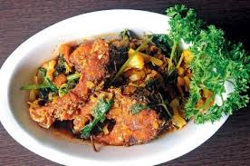

The food in Manipur is simple, organic and aromatic with local and exotic herbs. There is an absolute freshness and zest to the cuisine with relatively simple methods of cooking and a unique flavour and fragrance due to the local and seasonal ingredients.

Ngathongba
The staple ingredients here are rice, fish, usually from a private pond that almost every household has, potatoes along with aromatic herbs and roots also from their kitchen garden. The dishes generally are prepared without using any oil. Ngri which is prepared by fermentation is the favourite fish of Manipuri people and a true local delicacy that cannot be missed..
Nga-thongba (fish curry), Ooti (a typical Manipuri vegetarian dish), Eromba, Chagem pomba (made with fermented soya, mustard leaves) and Chamthong or kangshoi (which is a stew cooked with seasonal vegetables) are the most essential loved delicacies of the area. Other than the local preparations, North-Indian and Chinese cuisines are also popular and enjoyed here.
Muga, Manipur This is quite similar to Khasi. However, the shawl is usually made of silk, named Innaphi. Wrapped shirt with phanekand shawl is the common dresses for women. Men wear dhoti with jacket and white turban. Their dresses have simple embroidery and different occasions call for different color attire.